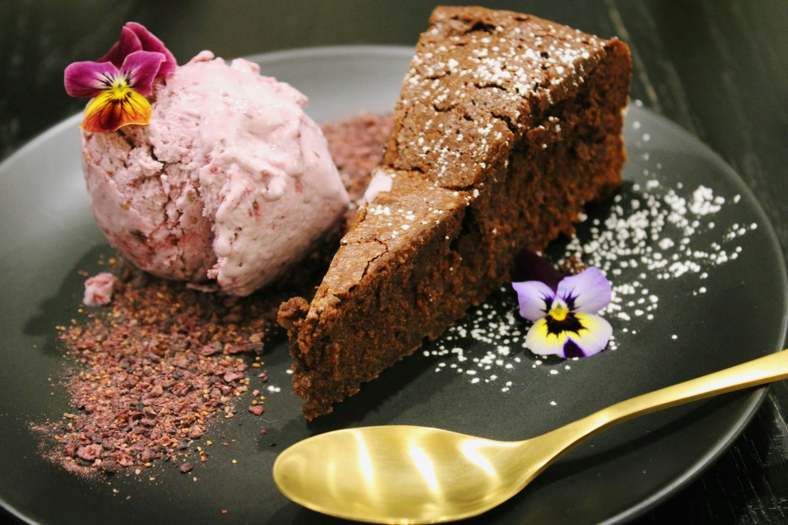
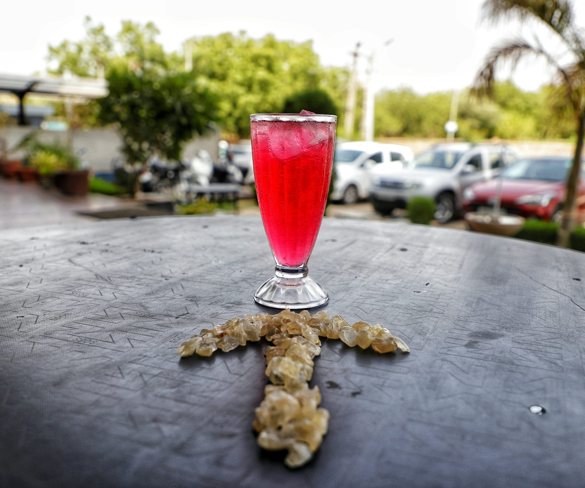
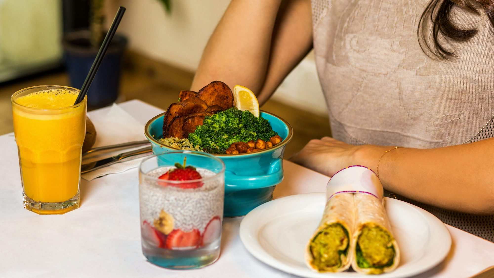
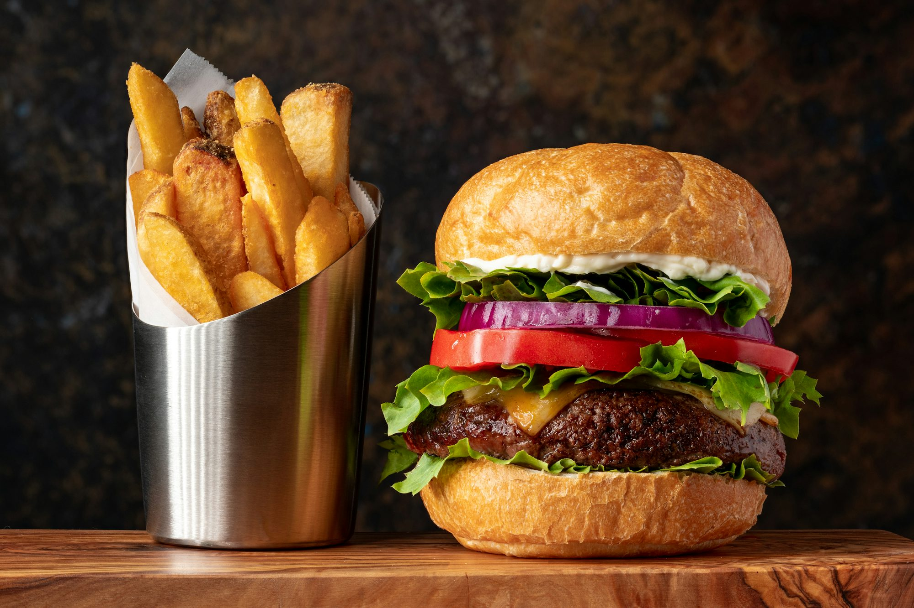

Cakes Around the World: A Delicious Journey Through Time and Culture
Exhibition


Reading corner

Exploring the Exotic World of Fruit Juices
Discover the vibrant flavors and health benefits of exotic fruit juices, from tropical blends to unique nectar creations.
Sofia Martinez
03/28/26
A Taste of Tradition: The Enduring Legacy of Family Recipes
Exploring the cultural significance of family recipes, how they connect generations, and the stories behind beloved dishes from around the world.
Sophia Martinez
Dining Trends to Watch: What’s Shaping the Restaurant Scene
This article examines emerging dining trends that are reshaping the restaurant landscape, focusing on consumer preferences, sustainability, and culinary creativity.
Elena Rossi

Decadent Delights: A Sweet Journey Through Global Desserts
Explore the fascinating world of desserts from around the globe, showcasing their unique ingredients, cultural significance, and the joy they bring to our lives.
Lucas Green
11/19/25
Café Innovations: How Unique Concepts are Shaping the Coffee Experience
This article explores innovative café concepts that enhance the coffee experience, focusing on the creative ideas transforming how we enjoy coffee around the world.
Ella Johnson
02/22/26

Burgers Around the World: A Flavorful Exploration
Join us on a culinary journey as we explore the diverse and delicious world of burgers, highlighting regional variations and unique flavor profiles.
Emma Richardson
02/28/26
Exploring the World of Gastronomy: The Evolution and Impact of Restaurants on Modern Life
This article delves into the evolution of the restaurant industry and its significant role in shaping contemporary life. From the rise of diverse dining options to the social and cultural influence of eating out, it highlights how restaurants have become integral to modern society.
Lucas Hernandez